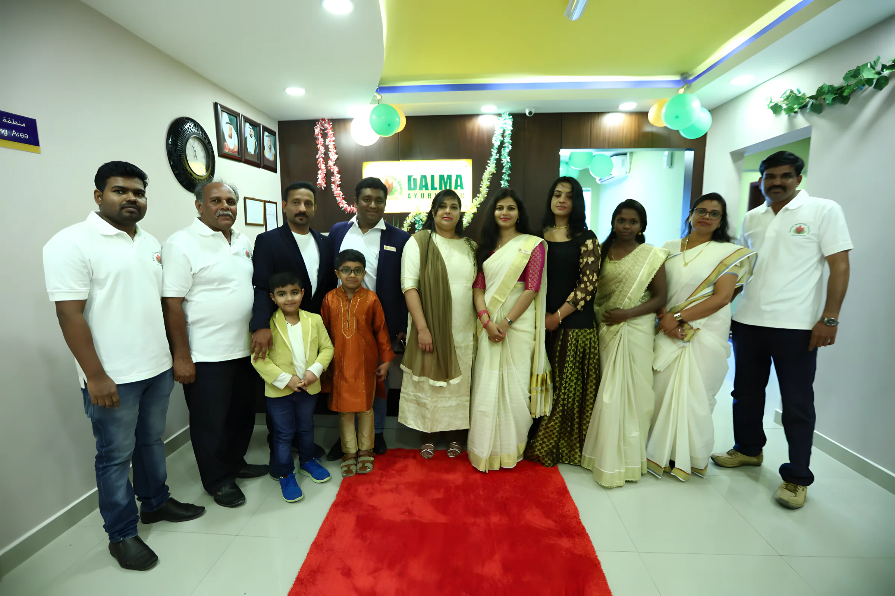
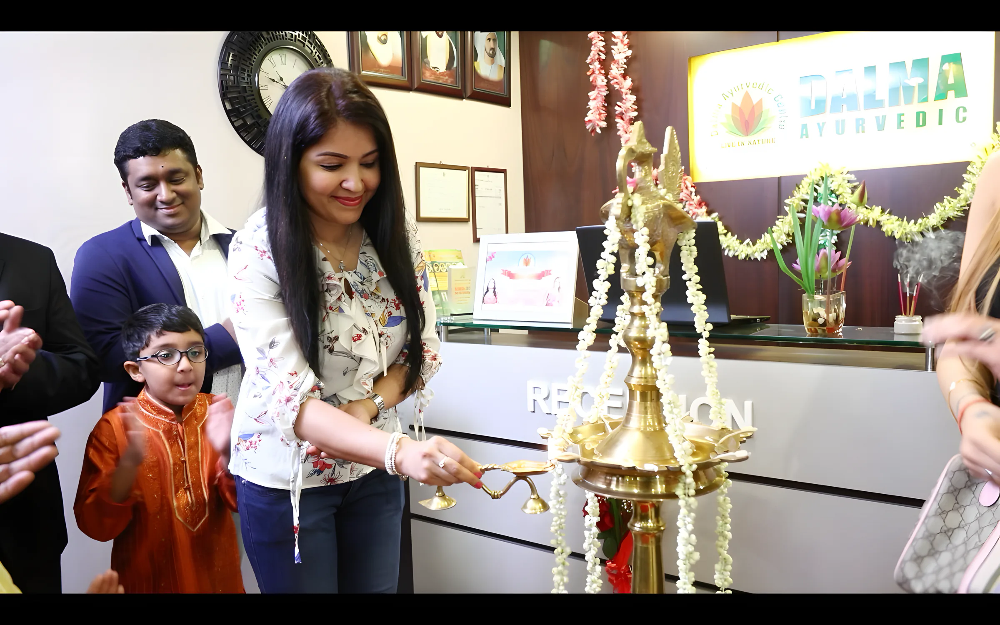

Our doctor & Ayurveda
Dalma is a Kerala Ayurveda centre in Sharjah. Our doctors follow the traditional methods strictly, and every patient gets individual care, from the first pulse reading to the last day of the course.

Dr. P. Tinu Thampi, B.A.M.S
Chief Ayurvedic Consultant & CEO
Dr. Tinu comes from a traditional Ayurvedic family in Kerala. He finished his Bachelor of Ayurvedic Medicine and Surgery in 2002 in Mumbai, ran his own Panchakarma centre in India, and is a Ministry of Health approved Ayurvedic practitioner in the UAE.
He specialises in chronic back and neck pain, skin disorders, male and female infertility, stress management, lifestyle disorders and traditional Panchakarma. He has attended Ayurvedic conferences around the world, and his aim is simple: to make more people aware of what Ayurveda can do for them.


How Ayurveda sees you
Ayurveda treats you as a whole: body, mind and soul. It deals with prevention as much as cure. In the body, three forces keep the rhythm going. When they fall out of balance you get ill; when they are balanced, you are healthy. Every treatment and prescription we give aims at bringing that balance back.
In the mind the same idea works through Satwa, Rajas and Thamas. People come to Ayurveda because the principles are sound, the side effects are few, and the cost is reasonable.
Yoga and meditation
Yoga comes from the Sanskrit root yuj, to join. It is a practical aid, not a religion, and it sits next to Ayurveda as a branch of the same Vedic tree. Meditation has a special place in the Ayurvedic daily routine; we suggest doing it after a bath.
- Asanaa position or stance
- Pranayamathe practice of breathing
- Dhyanameditation
- Meditationconcentrated focus
“I have started a yoga class from April 2019 to January 2020, I have continued the class with great enthusiasm, and the freshness of yoga has taken hold of me.”
The centre
Al Zamil Building, Al Zahra Square. Our rooms, and the day we celebrated our first anniversary.



Come and see the doctor.
Book a consultation on WhatsApp or call us. Open every day 9am to 10pm, Friday until 9pm.